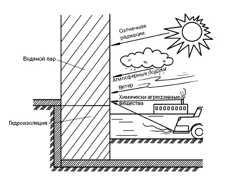

Что надо знать о стенах.
 Вместо предисловия, или что надо знать о стенах
Вместо предисловия, или что надо знать о стенах
Тому, что в быту мы привыкли называть просто стенами, в строительстве дано очень точное наименование – «ограждающие конструкции». В его основе лежит функциональное предназначение этого элемента дома. Наружные стены ограждают и защищают помещение от воздействия окружающей среды, воспринимают свою часть нагрузки, величина которой определяется конструктивной системой постройки (этажностью и пр.).
Одновременно наружные стены представляют собой и фасад здания, не существующий сам по себе, а вместе с использующимися материалами для стен образующий единую конструкцию. От нее зависят функциональность, а также декоративное убранство и пропорциональность отдельных составляющих фасада и в конечном итоге принадлежность сооружения к тому или иному стилю.
К наружным стенам предъявляются очень серьезные требования, поскольку для качественного выполнения ими своей задачи они должны:
1) быть прочными, устойчивыми, долговечными, сейсмо– (в определенных районах) и огнестойкими;
2) иметь низкую теплопроводность;
3) защищать от проникновения шума и влаги;
4) обладать архитектурной выразительностью.
Поэтому, приступая к строительству (в том числе и индивидуального дома), необходимо учитывать ряд положений:
1) общие характеристики (количество этажей, предполагаемое назначение, температурно-влажностные условия и пр.);
2) расположение постройки на территории (в городе или за его чертой);
3) природно-климатические факторы, типичные для данной местности;
4) условия строительства (особенности грунта и др.);
5) имеющиеся строительные материалы;
6) финансовые возможности.
Стены, являясь ограждающими конструкциями, испытывают на себе различное воздействие, обусловленное процессами, протекающими и внутри, и снаружи (рис. 1).
Прежде всего необходимо сказать об атмосферных осадках. Наибольший вред наносит косой дождь с вет ром, при котором вода проникает сквозь пористую структуру поверхности, малейшие щели, трещины, недостаточно плотные швы и т. д. Сильнее всего страдают углы и верхняя часть постройки. Разрушать стены могут также неисправная система водосточных труб (вертикальные швы на трубах (они должны отстоять от стены, как минимум, на 30 мм) надо располагать на противоположной от стены стороне); поверхностные воды, увлажняющие цоколь и нижнюю часть стен.
Неправильно или некачественно выполненные оконные откосы (если они располагаются менее чем в 30 мм от стены и не имеют достаточного наклона) приводят к тому, что дождевая вода проникает внутрь стены.
На стеновую конструкцию воздействует и водяной пар, который всегда присутствует внутри постройки, возникая в процессе жизнедеятельности людей (они стирают, моют, готовят пищу и пр.). Он проникает внутрь стен, охлаждается и выпадает в виде конденсата. Чем больше температурный контраст между наружным и внутренним воздухом, тем больше влаги образуется и аккумулируется в стене. Чтобы в процессе эксплуатации ограждающая конструкция не утрачивала прочность, поддерживала теплоизоляцию помещений на необходимом уровне, нужно накапливающуюся в ней влагу эффективно отводить. С этой целью устраиваются вентилируемые фасады, используются пароизоляционные материалы и т. д.

Рис. 1. Нагрузки, которым подвергаются наружные стены и цоколь
На состояние стен оказывает влияние и почвенная влага, которая в виде капиллярного подсоса поднимается через фундамент и цоколь к стенам. Поэтому требуется монтаж эффективной гидроизоляции, которая предотвратит отсыревание ограждающих конструкций.
Стены должны противостоять и ветровым нагрузкам, поскольку потоки воздуха, огибая постройку, создают вокруг нее области положительного и отрицательного давления, которые негативно на них влияют.
Материалы для строительства и отделки стен по-разному воспринимают солнечное излучение, например керамическая плитка не испытывает на себе практически никакого воздействия, а лакокрасочные материалы могут быть достаточно чувствительными и растрескиваться на наружной стене.
Что касается температурных перепадов, то ограждающие конструкции находятся в довольно жестких условиях, поскольку на их внутренней плоскости наблюдается та же температура, что и в самом помещении, в то время как на наружной поверхности температуры нередко варьируются в широких пределах (если допустить, что зимняя температура составляет –20, а летняя 30 °C, то приходится констатировать температурный перепад в 50 °C), более того, она может отличаться на разных участках стены. Поэтому при выборе материалов для стен необходимо учитывать коэффициенты температурного расширения, чтобы избежать деформации конструкции.
И последнее. Принимая во внимание неважную экологию наших городов и воздействие на постройки агрессивных веществ, необходимо подбирать материалы для стен, которые смогут противостоять такой химической атаке.
В отличие от наружных роль внутренних стен и перегородок более простая: они разделяют пространство дома на отдельные помещения и также должны быть не только прочными, долговечными, способными выполнять шумо– и звукоизолирующую функции, но и соответствовать интерьеру дома.
После того как вы получили представление о том, что такое стены и какими они должны быть, можно переходить к разговору о возведении стен из различных материалов и работах, в процессе которых это осуществляется. Разумеется, нельзя проигнорировать вопрос о том, какие материалы и инструменты потребуются при строительстве.
По материалам книги Галины Алексеевны Сериковой
" Современные работы по возведению стен и перегородок . "
А также из других источников Интернет
Уважаемый Читатель - после ознакомления с Книгой
рекомендую Вам заказать ее бумажное издание.